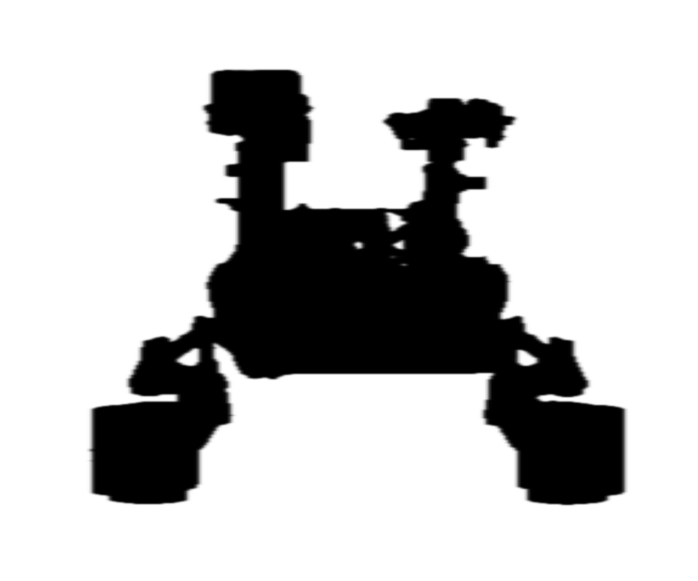
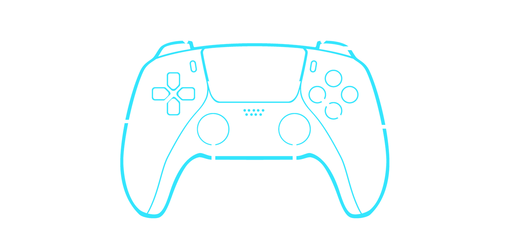

MARTIAN ROBOTSMISSIONEXPLORER
Location motion
Go to Sol
Earth date—
Ready to map image geometry
Coverage0° / 360°
Curiosity
Location 1 / Sol 0
Location resolution
Location 1 / Sol 0
↔Drag to explore
MISSION CONTROL
Explorer controls
Navigate the panorama, inspect overlapping source frames, and move through each rover’s mapped locations.
Mouse & panorama
- Drag
- Look around the panorama.
- Mouse wheel
- Zoom in and out.
- Alt + hover
- Reveal the overlapping image beneath the pointer.
- Click an image
- Open its image information panel.
- Shift + click
- Add or remove an alignment-correction image.
- Shift + drag
- Draw a circular image selection.
Keyboard
- A / D
- Move the virtual camera left / right.
- W / S
- Move the virtual camera forward / back.
- Q / E
- Move the virtual camera up.
- C
- Move the virtual camera down.
- Space
- Smoothly return the virtual camera to the panorama centre.
- Esc
- Cancel an image selection, close a notice, or close this help.
Navigation & layers
- Sol stepper
- Change the requested Martian day; loading fetches a new public image set.
- Location stepper
- Move through mapped rover stations, including the adjacent Sol when necessary.
- Location resolution
- Merge or separate nearby rover positions within the active Sol.
- Layer spacing
- Adjust the faux-depth separation of overlapping captures.
- Fullscreen
- Use the upper-right canvas button for an unobstructed view and live HUD feedback.
GAMEPAD
Controller mapping
Standard Gamepad mapping is supported. Analog sticks and triggers use exponential response after their dead zones.

Left stick · move camera Right stick · look L1 · — L2 · analog zoom R1 · move up R2 · move down L3 · reset camera R3 · reveal image beneath D-pad · location & resolution Circle · Escape Square · Fullscreen- D-pad left / right
- Decrease / increase location resolution.
- D-pad up / down
- Next / previous mapped location.
⌁Each frame is positioned from its available camera axis and elevation data.
◷Later images render above earlier captures.